Temporal Fields 4D Gaussian Splatting
Textile reconstruction revision · chronological evidence
STAGE 01 · failed previous approach · 2026-10-08T15:10:31.911182+00:00
Rejected sparse textile result
The previous textile viewer contains 45 initial tracked points and no RGB Gaussian model. Tracking loses support under folds and hands. The source recordings remain preserved; this revision replaces that failed route.

Diagnostic from real source images or model renders; not a desktop screenshot
STAGE 02 · first-frame visual check passed · 2026-10-08T15:10:32.068196+00:00
First-frame SAM2 masks reviewed
Local pinned SAM2 inference separates the knitted textile from the printed marker board in all three first frames. Green shows the proposed cloth mask. Full-sequence propagation and hand exclusion are running; later frames require review.

Diagnostic from real source images or model renders; not a desktop screenshot
STAGE 03 · sampled visual review passed · 2026-10-08T15:15:27.853894+00:00
Full-sequence masks reviewed
SAM2 propagated the cloth identity through 214 samples covering 0–42.586 seconds in each camera. Visual review of nine times shows separation of cloth from board and most hands during stretching, folding, lifting and return to the table. Conservative skin exclusions also produce occlusion masks. Masks remain automatic and can miss fine yarn edges.
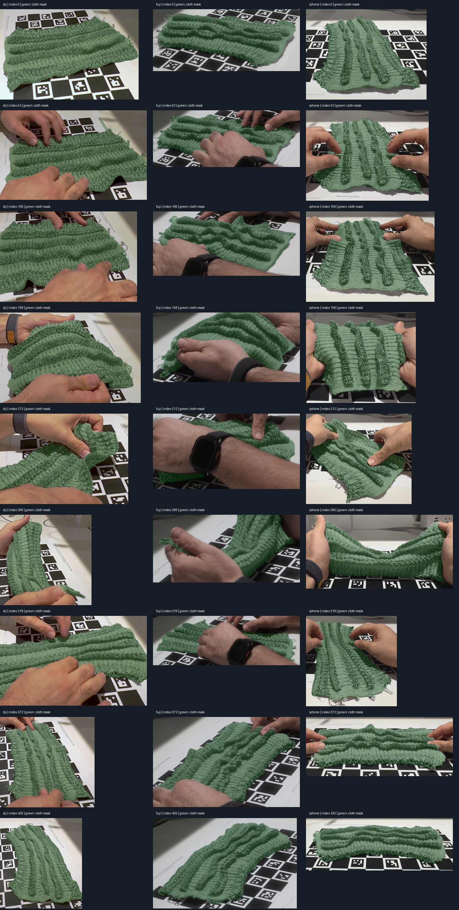
Diagnostic from real source images or model renders; not a desktop screenshot
STAGE 04 · real RGB baseline visually reviewed · 2026-10-08T15:22:42.463021+00:00
Dense initialization and first actual RGB splat
Dense calibrated matching provides 7,425 surface samples instead of 45 sparse tracks. The first frame now has 36,790 trained RGB Gaussians using native crops, including the 2,705-pixel-wide Fuji crop. The comparison is masked source, actual Gaussian render, and opacity. Fitting PSNR is 33.4/29.4/26.8 dB for DJI/Fuji/iPhone; these are training-view residuals, not independent validation. Temporal reconstruction is next. Initial integration errors (input shape tensor and descriptor-confidence threshold) were corrected before this result; source/attempt logs are retained.
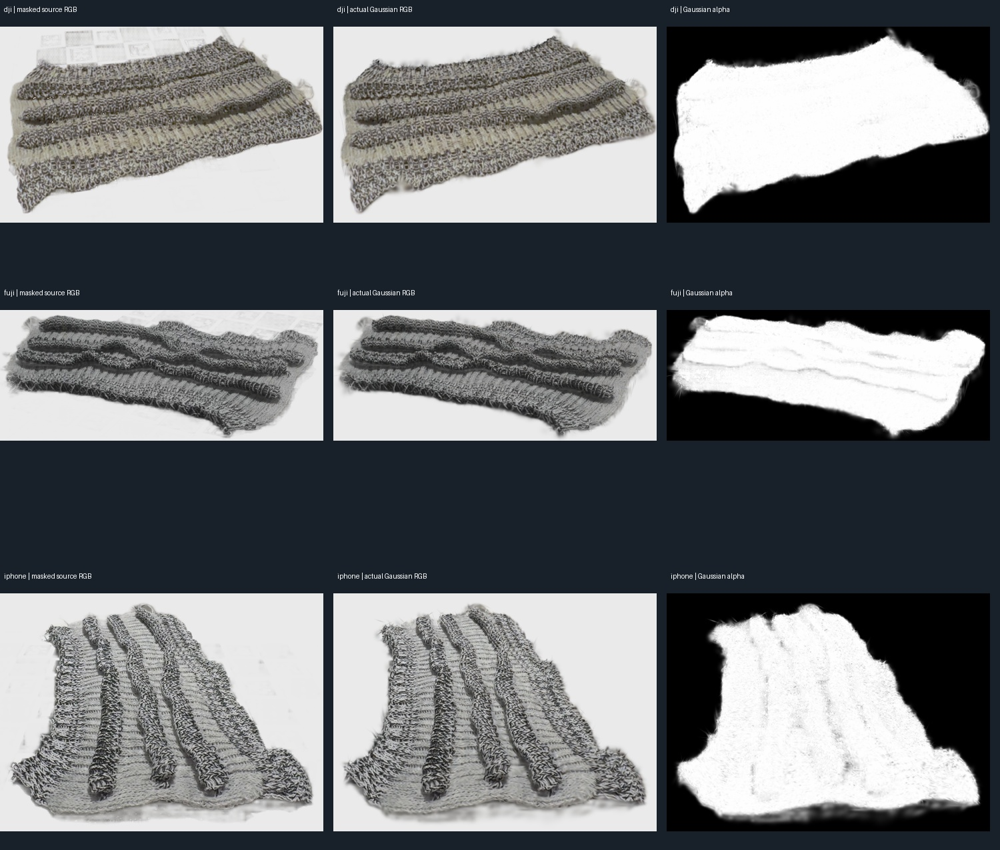
Diagnostic from real source images or model renders; not a desktop screenshot
STAGE 05 · full-sequence material tracking rejected · 2026-10-08T15:27:20.392931+00:00
Long tracking test fails through large folds
CoTracker3 initialized 700 spatially distributed nodes and improves early coverage substantially. Only 70 of 214 samples retain at least 100 multiview-supported nodes, and all triangulated support disappears after 20.587 seconds. Long-term knit identity still fails through hands and folding. This trial is retained and will not be used to invent full-sequence material deformation. Dense per-time multiview reconstruction is being tested for complete RGB shape replay; such frames do not prove persistent material identity.

Diagnostic from real source images or model renders; not a desktop screenshot
STAGE 06 · failed attempt preserved; subsequent retry improves coverage · 2026-10-08T16:07:33.851019+00:00
Folded RGB retry: holes resolved by anchored shape prior
The first independent folded frame had large holes and 13.2/17.6/18.8 dB fitting residuals. The retained diagnostic shows that rejected attempt. Registered neural depth fills singly observed textile, corrected by calibrated stereo anchors. The improved native fit reaches 34.9/35.8/27.3 dB with roughly 99.5% foreground opacity. These are fitting residuals, not an independent accuracy test.
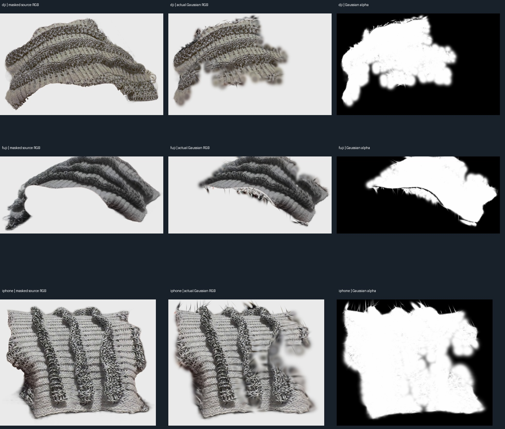
Diagnostic from real source images or model renders; not a desktop screenshot
STAGE 07 · real free-orbit model reviewed · 2026-10-08T16:07:34.024487+00:00
Actual RGB Gaussian replay: free-orbit folded fabric
Nine times spanning 0–42.509 seconds now have actual fitted RGB Gaussian models. This live browser render shows the folded fabric from a new elevated view. Geometry and encoded RGB are fitted per keyframe; long-term material identity is not asserted. Full 214-time native fitting is running.
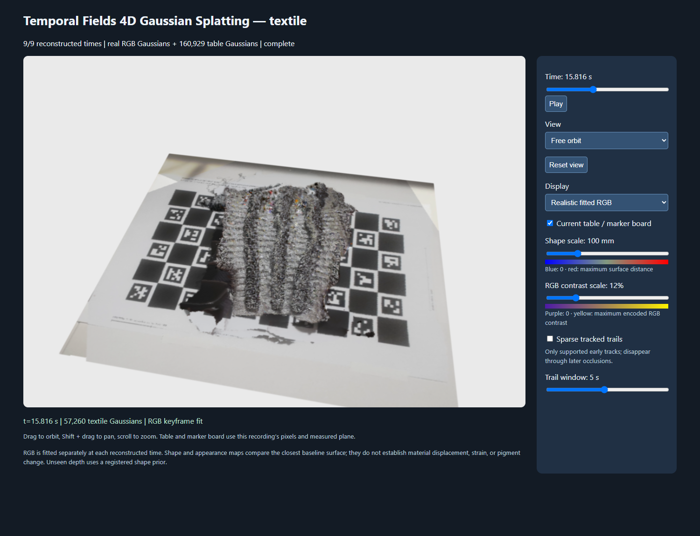
Genuine local browser screenshot; see accompanying capture metadata
STAGE 08 · fabric reviewed; table texture rejected · 2026-10-08T16:07:34.194233+00:00
Upright fabric and context-layer failures
The upright fabric renders as a 3D Gaussian surface. The wider table02 falsely flattened off-table imagery, and narrower table03 still included a moving wrist/watch. This genuine live screenshot preserves the table03 problem before correction. Both rejected layers remain saved separately.
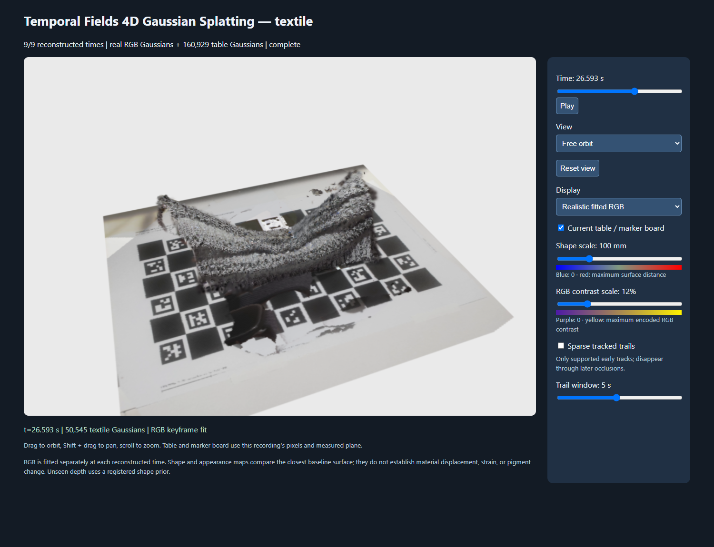
Genuine local browser screenshot; see accompanying capture metadata
STAGE 09 · cleaned context visually reviewed; full RGB training active · 2026-10-08T16:07:34.364001+00:00
Current-recording tabletop cleanup and full-sequence training
Corrected table04 uses only the measured board and close tabletop. A larger hand/wrist exclusion prevents a watch becoming part of the static plane; each exported point has at least two unobstructed source observations. No older scene or footage is merged. Native RGB fitting is retained: a 12,000-step patch trial reduced texture quality relative to full-crop fitting and was rejected. The 214-time replay is training with saved checkpoints.
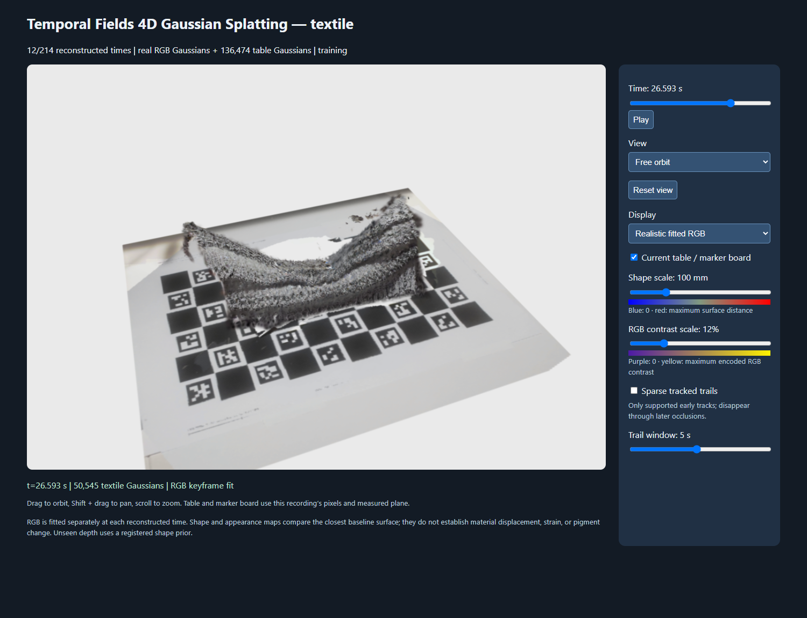
Genuine local browser screenshot; see accompanying capture metadata
STAGE 10 · failed cleanup trials preserved; original RGB fits retained · 2026-10-08T16:53:04.853062+00:00
Cleanup and appearance-model trials: preserve real knit detail
Twelve native camera/time crops compare the original fits with three retained cleanup variants. Neutral-color pruning lowers mean foreground PSNR from 33.78 to 29.48 dB and erases legitimate thread detail. Two-view support pruning loses 4.28 dB on the upright DJI view; both are rejected. Opacity-only pruning changes all checked crops by less than 0.001 dB. The viewer retains the original fitted models. Degree-one spherical harmonics gave similar fitting residuals to the selected constant-RGB model, so the full sequence keeps one consistent appearance basis. Finite model/timeline and sixteen live renderer checks passed on completed samples; full-sequence validation is pending.
STAGE 11 · map/reference behavior verified; full training active · 2026-10-08T17:00:01.424621+00:00
Separate shape and appearance maps on actual RGB Gaussians
This genuine local-browser screenshot shows the folded frame at 15.816 seconds, rendered from an elevated novel viewpoint. Shape distance and encoded RGB contrast are separate maps. First-surface and adjustable earlier-window references both pass live API checks; the reference time is reported under the render. These nearest-surface comparisons are not persistent material displacement, strain or pigment measurements. Realistic fitted RGB remains separately selectable. The full RGB sequence continues processing; 66 completed models passed finite-parameter checks and sixteen mode/time renders plus two recent-reference renders.
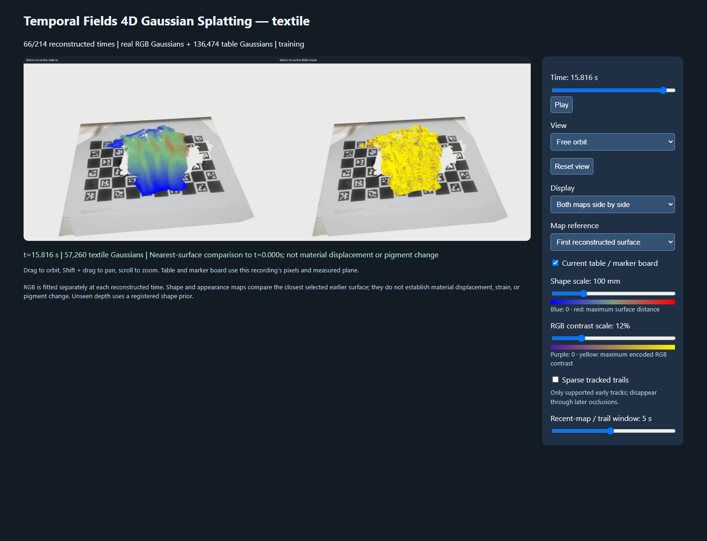
Genuine local browser screenshot; see accompanying capture metadata
STAGE 12 · recorded-pixel map visually reviewed; approximate visibility explicit · 2026-10-08T17:10:51.236171+00:00
Appearance fields revised to visible recorded-camera pixels
The preceding component-color map was overly sensitive: overlapping Gaussian colors are not individually determined by their combined RGB image. Appearance now samples the actual balanced camera pixels at approximately visible cloth-surface centers, rejects skin/hand masks and locally occluded point depths, and takes the median across available views. Gray indicates no supported recorded color sample. The folded frame has recorded observations for 90.4% of its Gaussian centers. Closest-reference association, changing viewpoint, shadows and knit texture can still change this map without pigment change. A 30% encoded-RGB scale displays the observed range more legibly; the scale remains adjustable. The realistic RGB model is unchanged. All earlier map images and fitting trials remain preserved.
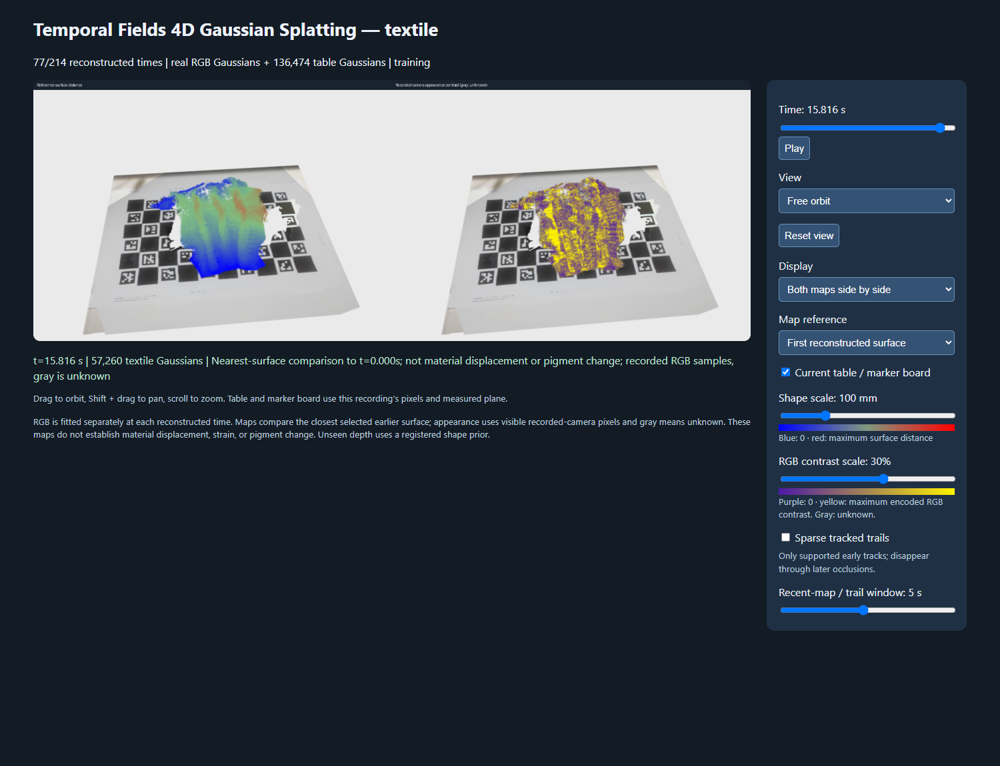
Genuine local browser screenshot; see accompanying capture metadata
STAGE 13 · actual RGB visually reviewed; hidden fabric unverified · 2026-10-08T17:19:17.421046+00:00
Stretched textile: actual RGB and remaining occlusion limits
The real free-orbit RGB render at 10.611 seconds shows the knitted ridges and stretch. Regions hidden by hands remain incomplete rather than being presented as measured cloth. The measured board and nearby table remain in the same world coordinates. This is a fitted Gaussian surface with changing shape and actual camera-derived appearance, not the previous sparse point overlay. There are 86 completed time samples at this stage; full native RGB fitting continues.
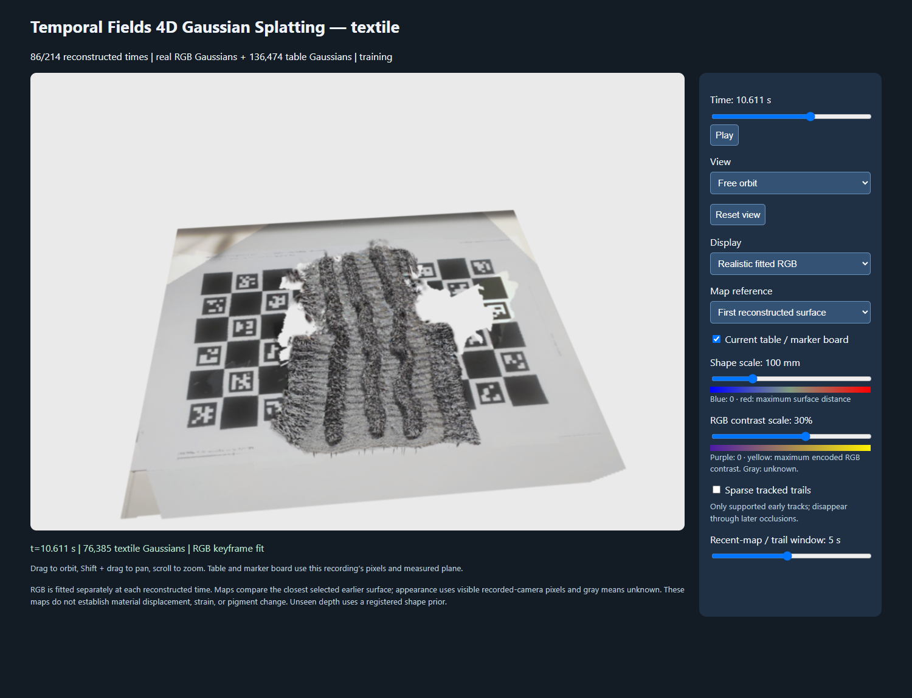
Genuine local browser screenshot; see accompanying capture metadata
STAGE 14 · new late RGB frame visually reviewed; full processing continues · 2026-10-08T17:45:13.744541+00:00
New middle-sequence fold beyond earlier tracking coverage
This genuine elevated free-orbit RGB screenshot shows the newly fitted fold at 21.989 s. The previous calibrated tracker had lost all supported material nodes after 20.587 seconds; independent dense Gaussian fitting still reconstructs visible knit and folds here. The growing sequence has passed halfway. Surface colors and shape remain fitted per keyframe, and hidden cloth/material identity remain unverified.
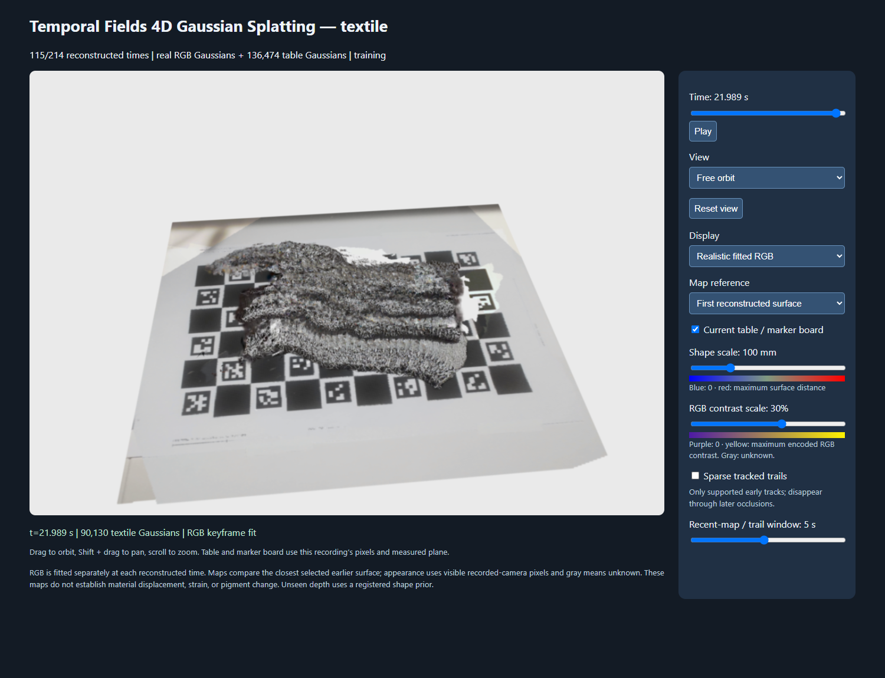
Genuine local browser screenshot; see accompanying capture metadata
STAGE 15 · interruption preserved; completed-frame resume active · 2026-10-08T18:39:05.682572+00:00
Windows timeline file-lock interruption and automatic recovery
At 171 completed keyframes, Windows denied an atomic replacement of sequence.json while a reader briefly held the timeline file. Frame336 had finished successfully; all completed NPZ, PLY, render comparisons and appearance samples were intact. The original traceback/failure record and this genuine interrupted-state screenshot are preserved. Atomic timeline publication now retries transient PermissionError without removing the previous valid manifest. The worker resumed with the same selected native fitting settings, skipped all 171 completed models and continued at frame338. The appearance watcher resumed separately. No footage or completed model was deleted or retrained.
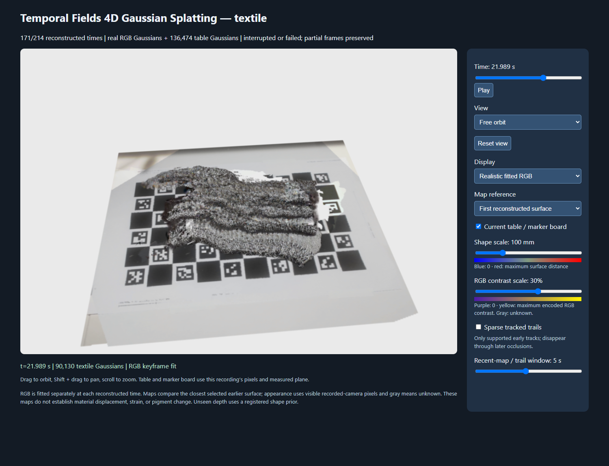
Genuine local browser screenshot; see accompanying capture metadata
STAGE 16 · completed · 2026-10-08T21:39:33.9319796Z
Completed full-recording RGB Gaussian fitting
All 214/214 independent-time RGB Gaussian models and visible recorded-pixel appearance arrays are complete. Full validation checked finite parameters, quaternion norms, standard binary PLY files, 16 real renders across modes and times, two recent-reference renders and seven rejected invalid queries. Fitted times cover 0?42.509133 seconds at a median 0.2002-second interval. Native pixel scale retained; no held-out geometry accuracy claim. Initial RGB and combined browser recordings were captured and checked; their raw captures and context04 encodings remain in the ignored cache.
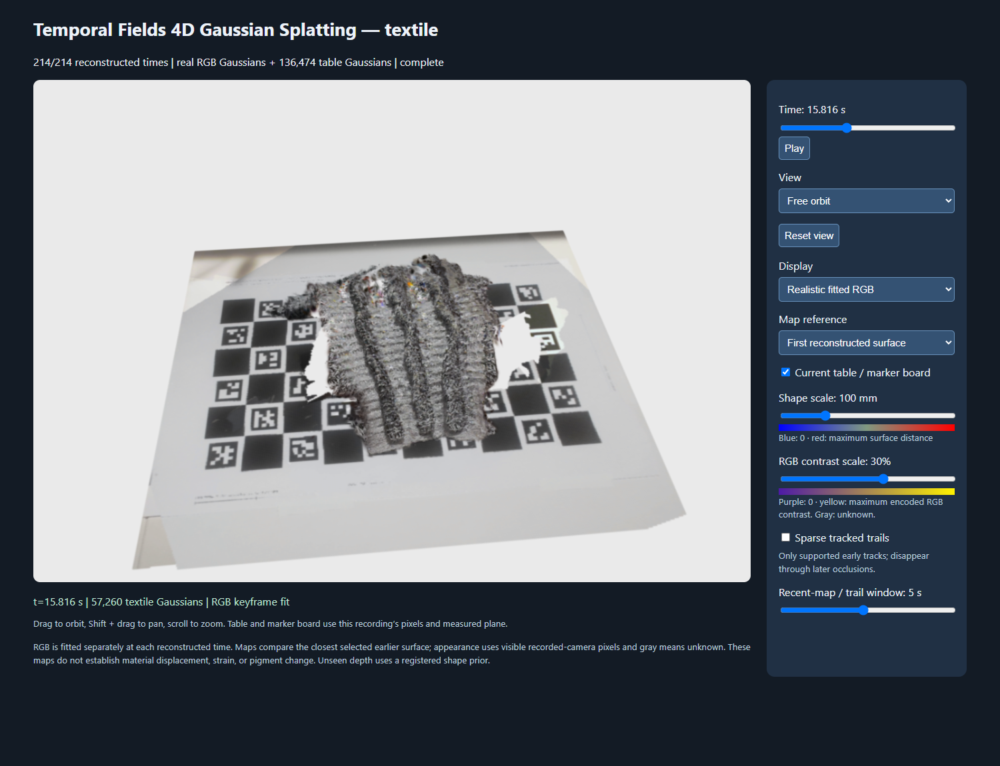
Genuine local browser screenshot; see accompanying capture metadata
STAGE 17 · diagnosed · 2026-10-08T21:48:20.0814018Z
Official-editor automation diagnosis
The first new-tab request lost its execution context during navigation. A second test looked for the editor in the hosted wrapper and timed out. The genuine screenshot shows the editor already running inside a same-origin iframe. The test helper now targets that frame. No model was uploaded or published.
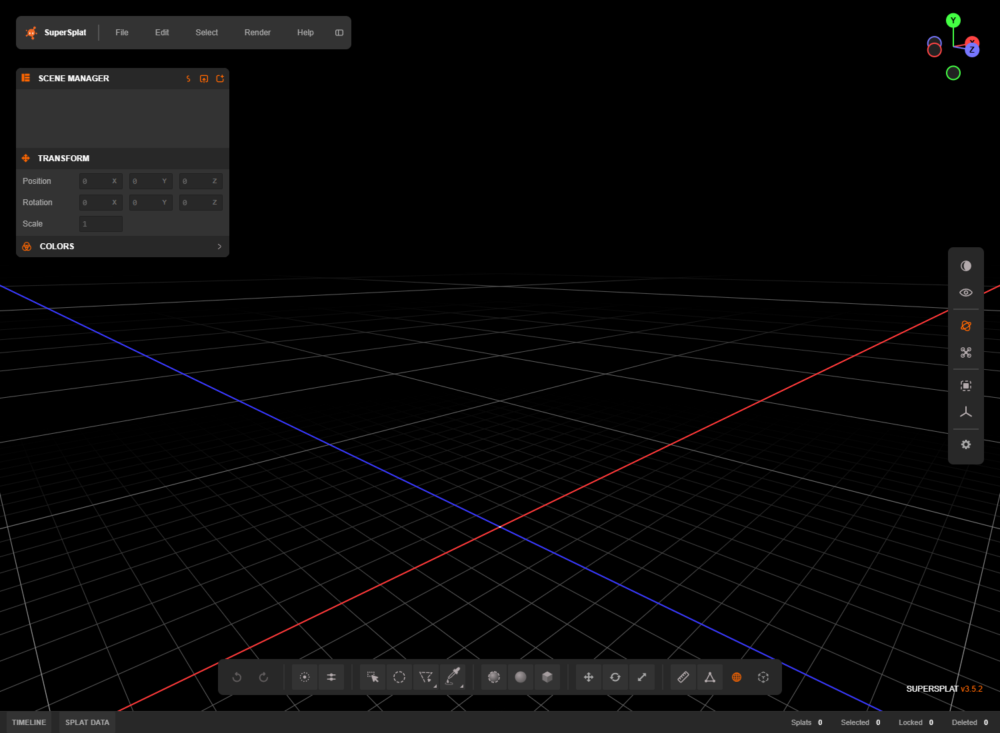
Genuine local browser screenshot; see accompanying capture metadata
STAGE 18 · import passed · 2026-10-08T21:49:50.3746878Z
First actual RGB PLY import in online SuperSplat
The full-quality folded-cloth PLY imports successfully with 193,734 Gaussians, including context04. It initially appears small because the default editor camera frames metre-scale scenes differently. This verifies actual importer compatibility; the following steps frame it for inspection.

Genuine local browser screenshot; see accompanying capture metadata
STAGE 19 · rejected · 2026-10-08T21:50:55.1745723Z
Rejected camera automation attempt
An inspection-camera expression constructed plain objects incorrectly, producing non-finite camera parameters. This screenshot and capture metadata are preserved as a failed view setup; the exported Gaussian data is unchanged. The later expression uses explicit x/y/z coordinates.
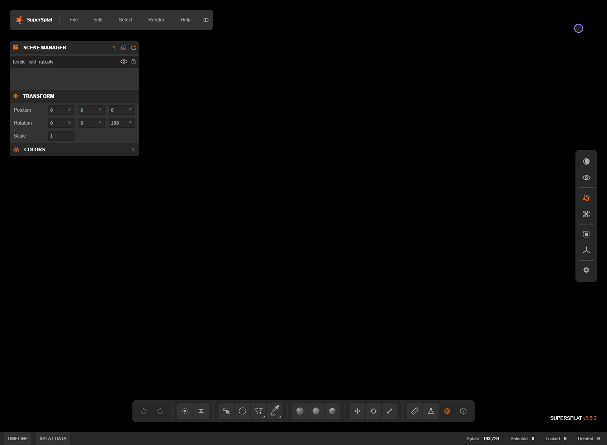
Genuine local browser screenshot; see accompanying capture metadata
STAGE 20 · timeline passed · 2026-10-08T21:51:02.3888761Z
Full PLY timeline recognized
SuperSplat recognizes all 1,277 numbered PLY files with its timeline set to 30 fps. This screenshot precedes correction of the inspection camera, so it verifies sequence loading rather than visible reconstruction quality. The timeline holds 214 fitted states; it does not invent 30 independent reconstructions per second.
Genuine local browser screenshot; see accompanying capture metadata
STAGE 21 · reviewed; context gaps · 2026-10-08T21:51:28.9781029Z
Actual first-frame RGB and context inspection
The corrected elevated iPhone-side camera shows textured cloth and this recording’s board/table in the actual online editor. Context04 leaves transparent board areas, which appear black here and were less obvious against the local light background. These gaps motivate sampling more unobstructed times.
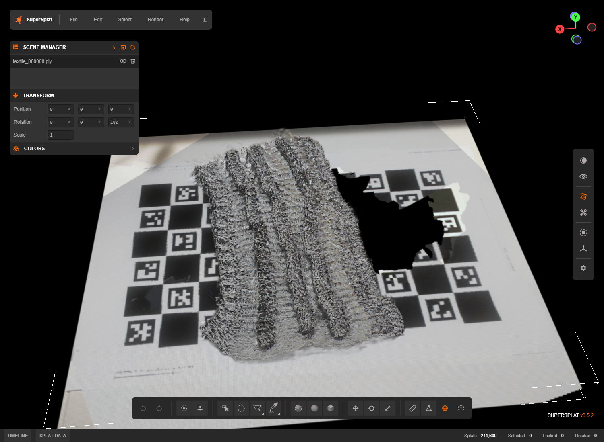
Genuine local browser screenshot; see accompanying capture metadata
STAGE 22 · reviewed · 2026-10-08T21:51:51.3936716Z
Actual folded RGB PLY sequence frame
Scrubbing to timeline frame475 loads the fitted textile at15.815833 seconds with 193,734 combined Gaussians. The yarn/folds are visible. Table transparency remains a context04 limitation; original files remain available.
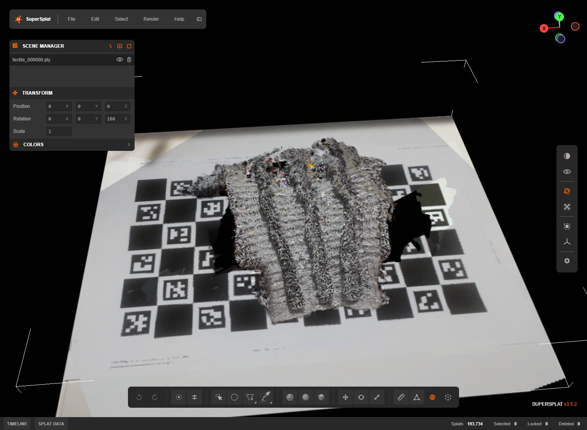
Genuine local browser screenshot; see accompanying capture metadata
STAGE 23 · performance shortfall · 2026-10-08T21:53:42.0598667Z
Full-quality online playback throughput
A five-second real SuperSplat playback test advances to frame150 at30 timeline fps, but observes71 actual Gaussian data swaps (14.16/s). Timeline speed is correct; sustained30 Gaussian swaps/s is not achieved. Preserve this trial and test compressed copies.
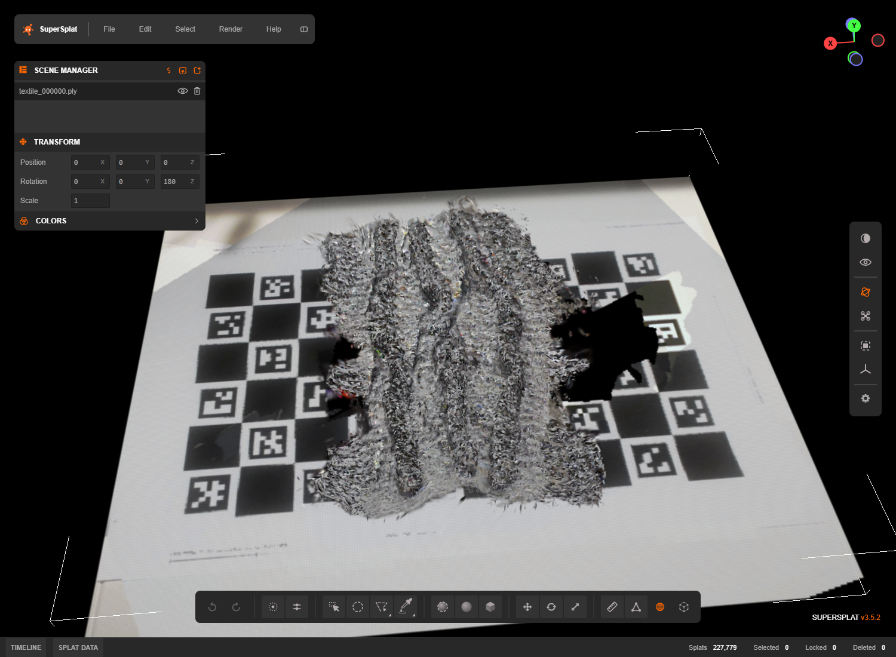
Genuine local browser screenshot; see accompanying capture metadata
STAGE 24 · context05 selected · 2026-10-08T21:58:20.7542955Z
Observed-context recovery and compressed PLY
Using all214 available mask times, instead of nine, recovers164,708 observed board/table Gaussians and removes the prominent empty patch. No unobserved pixel is fabricated and no other scene is merged. The compressed PLY imports and displays actual knit detail. Full float32 archives are retained; quantization error is measured per frame.
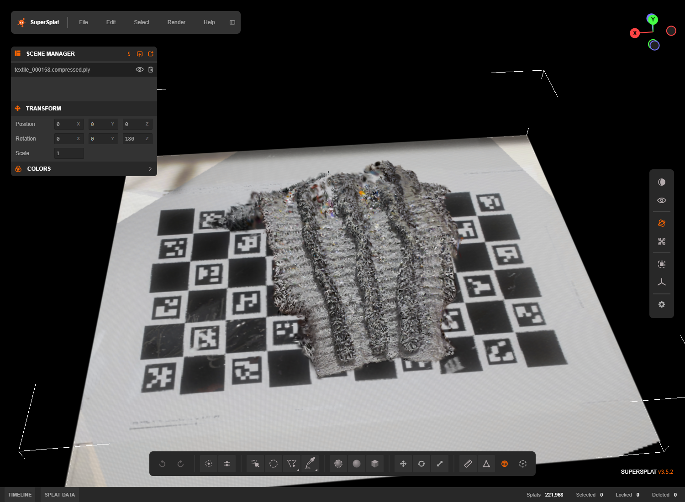
Genuine local browser screenshot; see accompanying capture metadata
STAGE 25 · performance shortfall · 2026-10-08T21:58:44.8686210Z
Combined compressed timeline performance trial
The combined compressed context05 sequence uses858MB of unique viewer data, but five-second playback observes12.39 swaps/s. Compression alone does not achieve30/s because complete table data is still rebuilt for each frame. Keep this attempt and separate the fixed table layer from animated cloth.
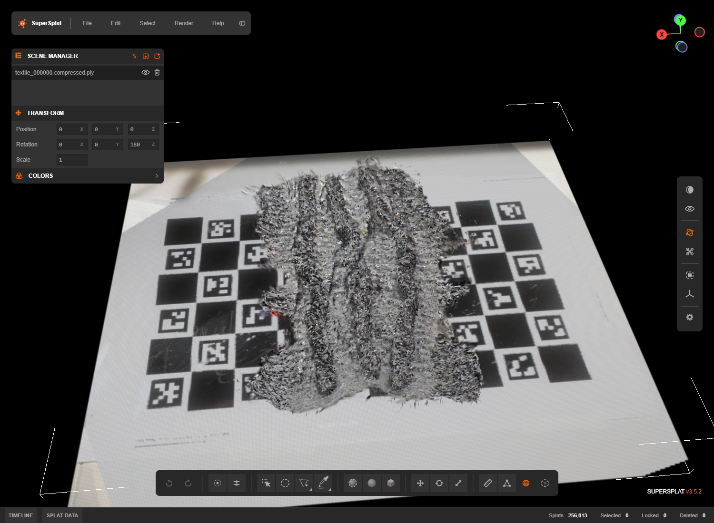
Genuine local browser screenshot; see accompanying capture metadata
STAGE 26 · selected; throughput qualified · 2026-10-08T22:01:53.6650345Z
Static-context optimization in actual SuperSplat
The official import handler keeps a single164,708-Gaussian table layer while playing only the changing cloth PLYs. All1,277 frames are recognized at30 timeline fps. Five-second playback advances to frame149 and observes118 actual swaps (23.57/s), improving on14.16/s. Unique compressed cloth data is284MB plus2.68MB context; float32 archives remain. This is a30 fps hold timeline, not30 Hz independently reconstructed motion or a guaranteed30/s renderer.
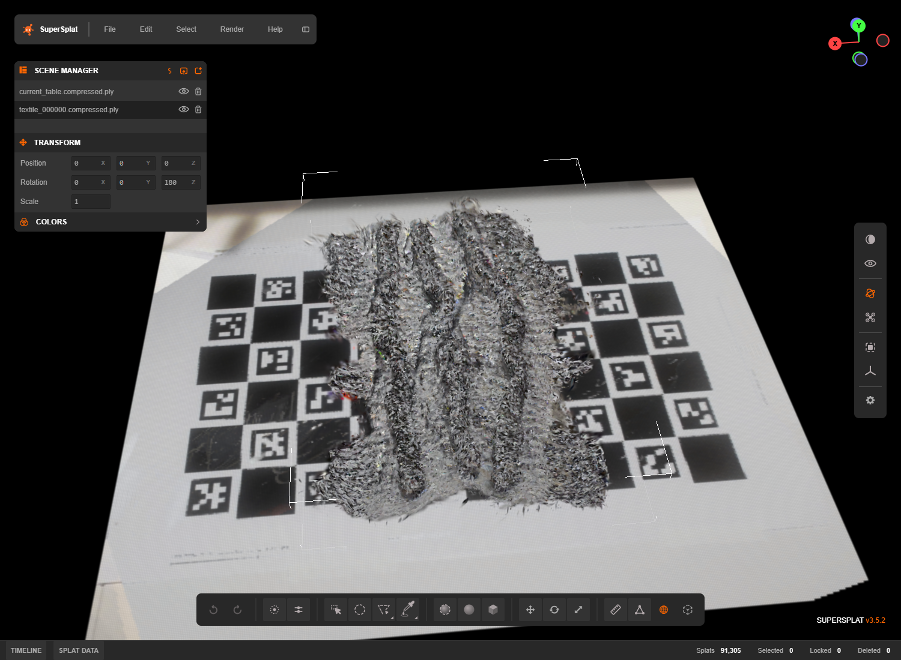
Genuine local browser screenshot; see accompanying capture metadata
STAGE 27 · visually reviewed · 2026-10-08T22:05:22.6372954Z
Final lifted RGB export and matching local viewer
The selected compressed cloth-only animation with a fixed current_table05 layer shows the lifted textile in the actual online editor. The same fitted time is available in the corrected local RGB viewer. Table gaps are reduced using actual observations across all214 mask times; no older scene or hidden pixel is inserted.
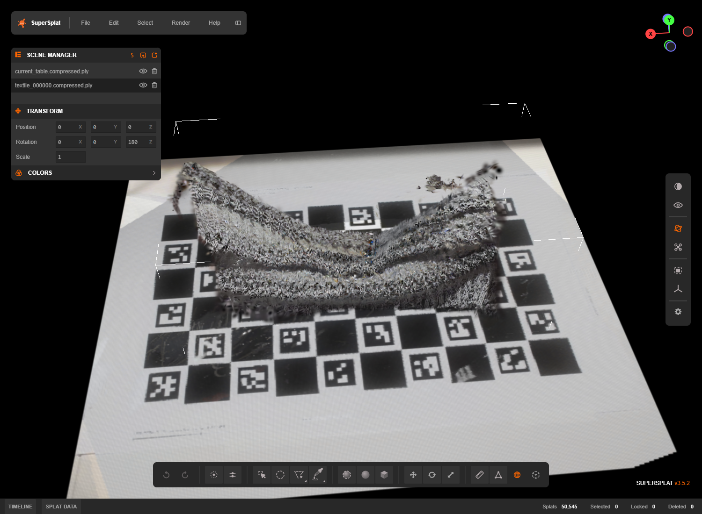
Genuine local browser screenshot; see accompanying capture metadata
STAGE 28 · validated · 2026-10-08T22:05:23.6243546Z
Selected current-session context in local RGB replay
The completed local viewer reports214 reconstructed times and164,708 table Gaussians. The elevated view at26.593 seconds shows real knit texture and the lifted surface. All modes and first/recent reference behavior passed the real API checks after the context change.

Genuine local browser screenshot; see accompanying capture metadata
STAGE 29 · compression validated · 2026-10-08T22:07:50.446154+00:00
Actual compressed/uncompressed Gaussian render comparison
All214 compressed cloth models and all1,277 timeline aliases pass file/count/hash/source-time checks. Position quantization is at most0.116mm and RGB-channel error at most0.00196. Four visible nonempty scene renders yield64.41?66.29dB against float32 originals. The first comparison attempt used an incompatible packed-background shape; the check was corrected to the viewer’s dense antialiased mode and completed. These are compression errors, not geometry accuracy.
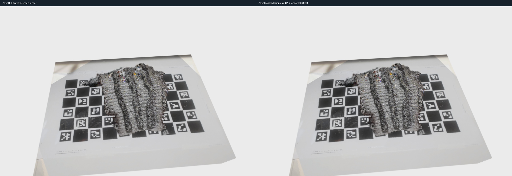
Diagnostic from real source images or model renders; not a desktop screenshot
STAGE 30 · completed · 2026-10-08T22:10:59.721910+00:00
Final compressed orbit videos and checkpoint
The selected current_table05 RGB and combined-map clips are actual browser recordings with native source-time playback and a higher iPhone-side +/-45-degree arc. RGB displays all214 fitted times; combined maps display89/214 while keeping correct wall-clock speed. Full decode, SHA256, faststart, time provenance and orbit checks pass. Total video size8.25MB at1500x1150/H264CRF20. Source frames and all earlier failures remain preserved. See videos/index.html and SUPERSPLAT.md for playback/export instructions. No Git staging, commit, push or restart.
STAGE 31 · full export reviewed · 2026-10-08T22:11:35.7017715Z
Last time in the actual SuperSplat sequence
The online editor loads timeline frame1276 (last fitted source time42.509133 seconds), retaining the164,708-Gaussian context and122,590 textile Gaussians. The separate table and animation layers remain present; no source data was uploaded or published.
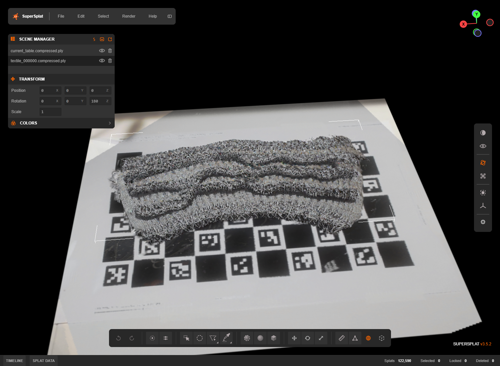
Genuine local browser screenshot; see accompanying capture metadata
STAGE 32 · limitation retained · 2026-10-08T22:13:27.441968+00:00
Remaining motion-blur and occlusion limitations
Native camera comparison at frame356 (35.602 seconds) retains visible source motion blur in Fuji and mismatched/ghost surfaces in the fit. Fuji foreground fit is20.70dB here; iPhone frame214 reaches only18.53dB. These weak times remain in the full sequence and are explicitly identified. The improved RGB reconstruction is a reviewable independent-time baseline, not pristine measured geometry or verified material strain.
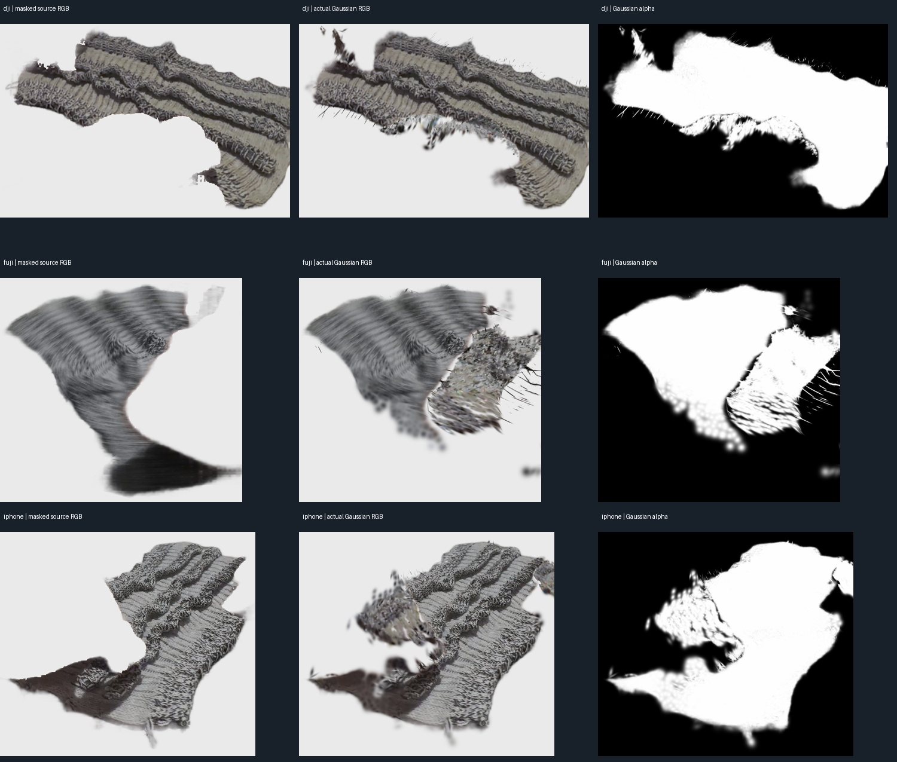
Diagnostic from real source images or model renders; not a desktop screenshot
STAGE 33 · browser playback passed · 2026-10-08T22:16:27.9250202Z
Final offline videos play in the actual browser
The offline documentation page opens both final MP4s, plays and pauses each without decoding errors. Screenshot metadata records video dimensions/duration, actual decoded frame counts and successful playback. A seek was attempted but playback restarted near zero through the simple local HTTP server; the subsequent check fully buffers the files before testing seek behavior. Final clips total 8.25 MB; source and failed attempts remain preserved in ignored storage.

Genuine local browser screenshot; see accompanying capture metadata
STAGE 34 · diagnosed · 2026-10-08T22:24:05.6670159Z
Simple documentation server seeking failure
Both final videos decoded and played, but the original simple HTTP preview did not handle the browser’s MP4 byte-range requests: seeking restarted near zero. A full-buffer retry exceeded the capture deadline. The actual failed-page state and a failure JSON are retained. The MP4 exports and source models are unchanged.
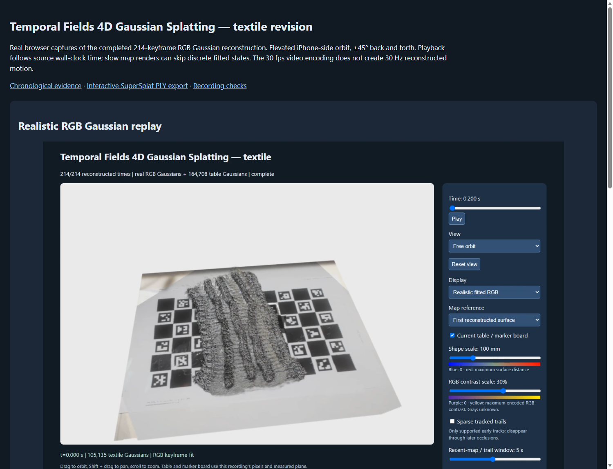
Genuine local browser screenshot; see accompanying capture metadata
STAGE 35 · passed · 2026-10-08T22:24:07.6124041Z
Seekable documentation playback verified
Added a loopback-only textile documentation server with exact206 byte-range responses. Three direct normal/suffix/open-ended range checks match the original MP4 bytes. In the actual browser, both clips seek to5.000s, play beyond5s and decode without errors. This completes the documentation playback check; videos remain8.25MB total.
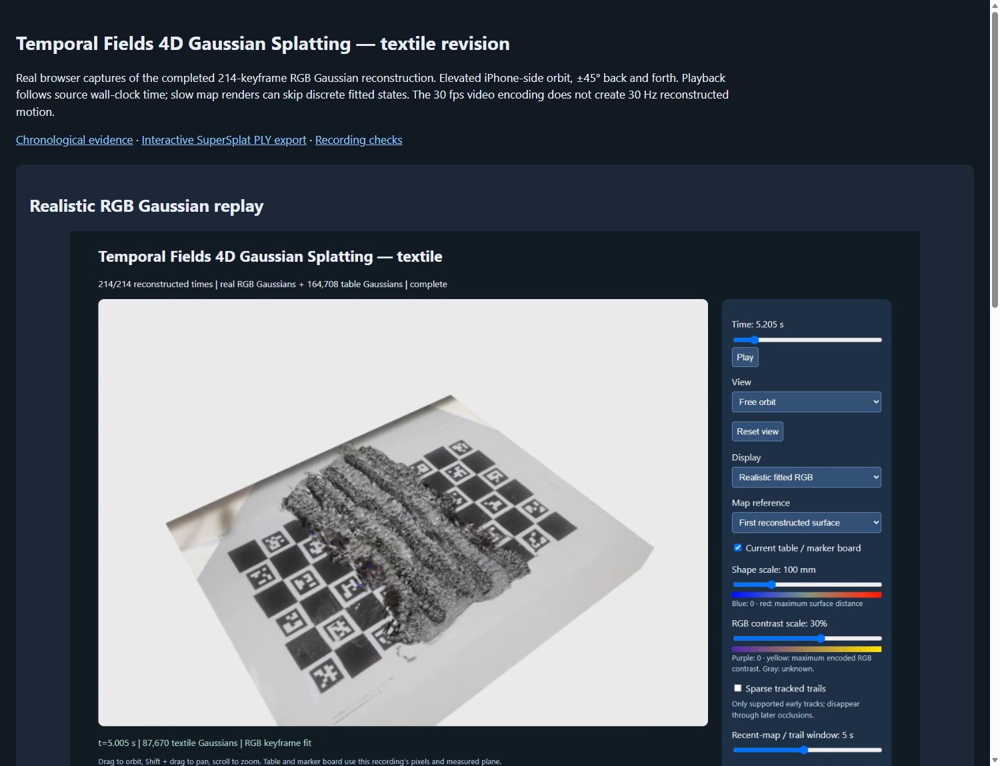
Genuine local browser screenshot; see accompanying capture metadata
STAGE 36 · ready · 2026-10-08T22:26:14.4226828Z
Interactive RGB viewer ready for review
Leave the completed viewer on realistic fitted RGB, first fitted time, current_table05, elevated iPhone-side free orbit. Press Play to review the full214-state sequence, or switch first/recent-reference surface/appearance maps. The selected SuperSplat animation and full-quality archives are saved locally; no Git action or source publication occurred.

Genuine local browser screenshot; see accompanying capture metadata
STAGE 37 · playback passed; visual quality subsequently rejected · 2026-10-08T23:15:09.8091936Z
Final yogurt and textile demo gallery
Created documentation/demos with one final viewer-interface recording and one clean RGB reconstruction-only 90-degree orbit for each experiment. Four videos total 23.09 MB; new clean encodings total 7.01 MB and use original lossless browser paint captures. All 53 supported yogurt poses and 214 selected textile states remain represented. SHA256, complete decoding, dimensions, timing and trajectory checks pass. All four clips actually seek to 5 seconds, play beyond it and decode without errors in the browser; HTTP206 byte ranges match original bytes. Source models and chronological clips are unchanged. No Git staging, commit or push was performed. The user subsequently rejected the cropped clean clips for limited resolution and stutter. Stages 38-40 record their replacement with native 4K offline renders.
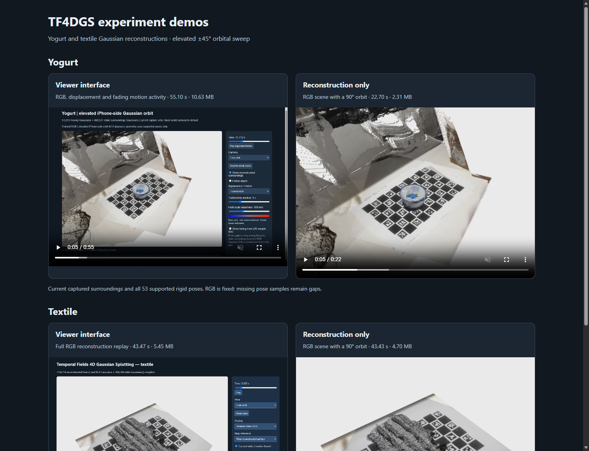
Genuine local browser screenshot; metadata: ../demos/gallery_review.capture.json
STAGE 38 · native renders validated; temporal model limitations remain · 2026-10-08T23:31:14.210790+00:00
Native 4K export and stutter diagnosis
The user rejected the 990 x 710 and 1060 x 736 browser crops. Measured old capture rates are 19.59 fps for yogurt across all modes and 22.46 fps for textile, with maximum paint gaps of 3.135 s and 0.197 s. Native gsplat rendering now computes every frame at 3840 x 2160 with antialiasing, source-time playback and H264 CRF16 encoding. Yogurt: 251 frames / 8.37 s / 21.33 MB; textile: 1,277 frames / 42.57 s / 44.97 MB. All 53 supported poses and all 214 fitted cloth states remain. Full decode and constant 30fps timestamp checks pass; mean five-reference RGB compression PSNR is 44.60 dB / 47.77 dB (encoding fidelity, not reconstruction accuracy). The diagnostic below uses exact decoded native render frames. Underlying five-Hz cloth fits and unsupported yogurt pose gaps are unchanged. Rejected full gallery is retained in ignored .local/workflows/dynamic_setup/native_demo_gallery_02/rejected_browser_crop_gallery/.
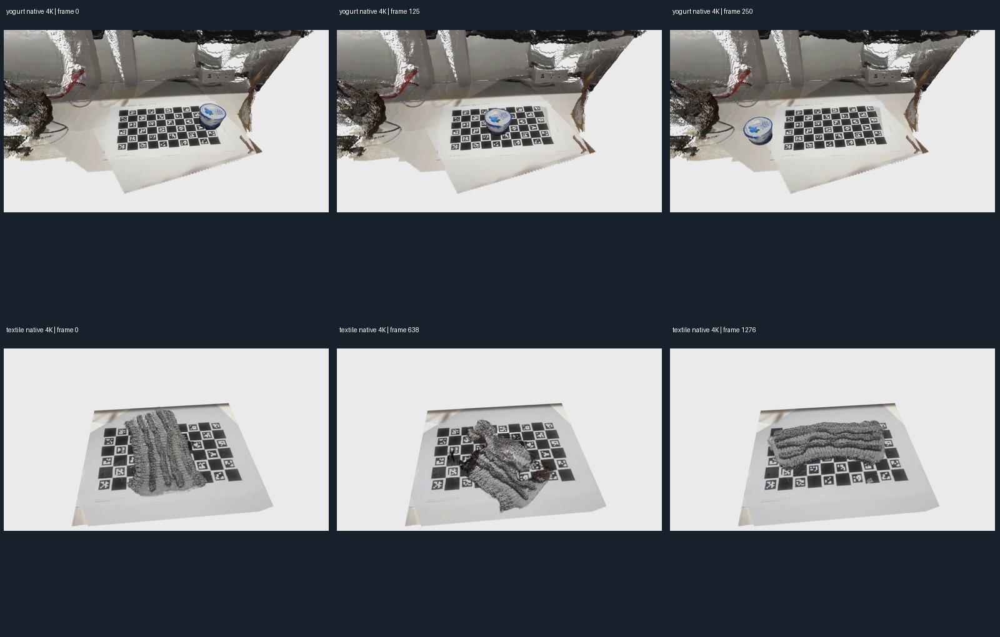
Diagnostic assembled from exact decoded native Gaussian render frames; not a desktop screenshot
STAGE 39 · failed attempt retained; browser visibility diagnosed · 2026-10-08T23:35:35.5081753Z
Background-browser playback check failed
The first native-video browser sample showed dropped presentation callbacks. Subsequent checks and screenshot paint waits timed out while the dedicated browser was hidden/occluded. The retained actual failed page state reports document_hidden=true for all players and zero presentation callbacks. This does not indicate missing frames in the saved MP4: full-file decoding and timestamps already pass. Restore the browser to the foreground and scroll each player into view before checking presentation.

Genuine local browser screenshot taken after the failed test; metadata retains the prior hidden-page playback results
STAGE 40 · native 4K demos ready; geometry continuity remains separate work · 2026-10-08T23:36:07.6443992Z
Native 4K gallery playback verified
All four selected videos seek and present 33 visible frames over about 1.1 seconds per clip, with zero dropped frames and no media errors in the foreground browser samples. Both clean videos report native 3840 x 2160 dimensions. Four HTTP206 byte-range checks match the current MP4 bytes. The gallery now contains 82.37 MB of MP4s, including 66.30 MB of new native renders; UI recordings remain identical to existing Git blobs. Final selected clean camera orbits are smooth 30fps at original source speed, while fitted cloth shape changes and missing yogurt poses can still pop. This closes the demo rendering correction without claiming a continuous deformation model. Source models, calibrated poses and static source pins are unchanged. No Git staging, commit or upload was performed.
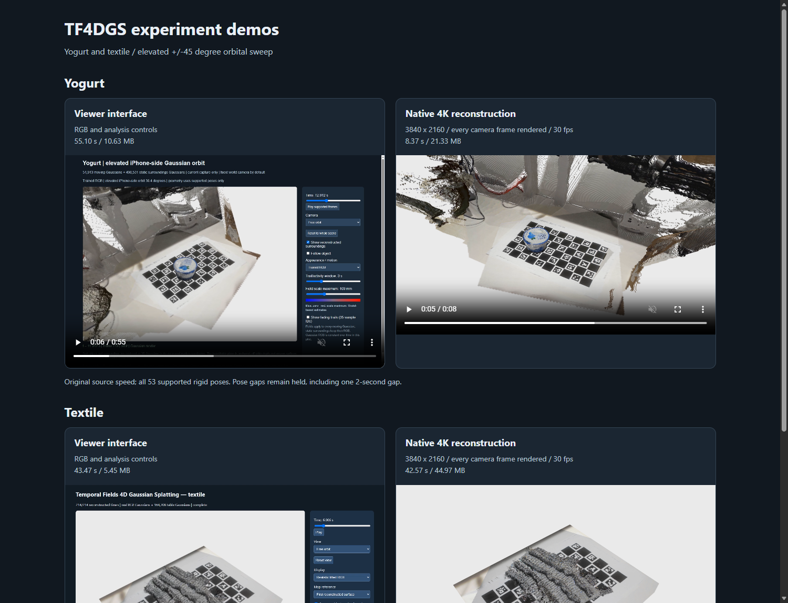
Genuine local browser screenshot; playback and capture metadata: ../demos/gallery_review_4k.capture.json